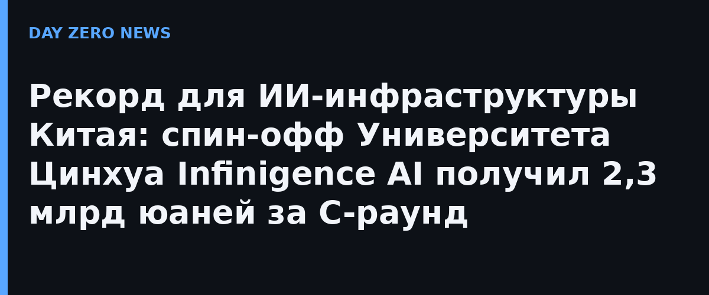

Компания Infinigence AI (Шанхай, основана в 2023 году, выросла из лаборатории НКС-EFC кафедры электроники Университета Цинхуа) полностью закрыла C-раунд на 2,3 млрд юаней. Суммарно с момента основания она привлекла 4,3 млрд юаней (~600 млн долларов) — это одновременно рекорды и за один раунд, и за всю историю китайского сегмента ИИ-нативной инфраструктуры. Сам факт раунда компания подтвердила через деловые СМИ; отдельного публичного пресс-релиза на собственном сайте она не публиковала.
В списке инвесторов — Tencent, Baidu, Lenovo и Xiaomi на стороне промышленности, HongShan (Китай, бывший Sequoia China), Qiming Ventures в числе финансовых фондов, а также государственные и окологосударственные структуры. CEO — Сюэ Лисюэ, выпускник Университета Цинхуа; научным ориентиром компании остаётся профессор Ван Юй, ранее основавший DPU Technology.
Infinigence не проектирует ускорители (как Biren или Enflame) и не выпускает фундаментальные модели (как Zhipu или MiniMax). Её ниша — «средний слой»: гетерогенное расписание вычислений и софтварно-хардверная оптимизация. Парадигма называется M×N: соединить M моделей с N видами чипов. По текущим данным компании, её центр распределения вычислений покрывает 37 000 PFLOPS и 16 типов чипов; платформа смешанного обучения позволяет объединять в одном тренировочном процессе китайские Ascend, Iluvatar, MetaX и Moore Threads с AMD и NVIDIA — с утилизацией вычислений до 97,6%.
С China Telecom компания провела первую для страны верификацию распределённого обучения на расстоянии более 4000 км: модель на 30 млрд параметров стабильно училась между кластером в Ха́ми (Синьцзян) и инференс-кластером в Шэньчжэне. Другая фирменная тема — разнесение предзаполнения и генерации между кластерами (архитектура PDD): задержка первого токена падает на 51,5%, цена токена — на 37,5%, а за последний год компания обещает десятикратное снижение стоимости инференса. Клиенты — Zhipu, Moonshot AI, China Mobile, China Unicom.
По сообщению Bloomberg со ссылкой на источники, Infinigence уже подала конфиденциальную заявку на листинг на бирже Гонконга с прицелом на первую половину 2027 года; до-listинговая оценка — 14,3 млрд юаней. В России то же направление — отечественные вычисления для ИИ — официально представлено правительственным проектом суперЭВМ «Достижение» на отечественных чипах; единого национального оператора смешанного обучения уровня Infinigence пока нет.